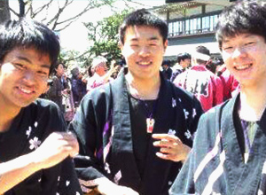
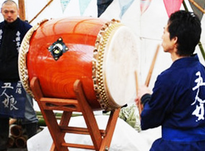

関根和太鼓教室
初心者からプロへ…
無料体験レッスン実施中！
- NEWS&TOPICS
- 最新の活動内容
- NEWS一覧を見る
-
2020.01.06 お知らせ
2020/01/06 「天皇杯 JFA第99回全日本サッカー選手権大会オープニングセレモニーに出演！
-
2020.01.12 LIVE
2020/01/12 「東京ふるさと祭」出演！
-
2020.02.11 LIVE
2020/02/02 「川越百万灯祭」単独ライブ
-
2020.02.22 LIVE
2020/02/11「第27回定期演奏会」開催！
RAPTURE
一度打ち始めたらやめられない！和太鼓の魅力とは？
-
思い切り叩いて
全身でリズムを感じる和太鼓は全身運動。思い切り体を動
かして、悩みも疲れも吹き飛ばそう！ - 
楽しく稽古しながら
最高の仲間と出会える！演奏はチームワークが命！全員の音を
一つにし、仲間と最高の演奏をしよう - 
イベントや演奏会で日頃の
練習の成果を発揮しよう！関根和太鼓教室では頻繁に
イベントや演奏会を実施！
VOICE
SNS入会者の声

ACCESS
マップ&アクセス